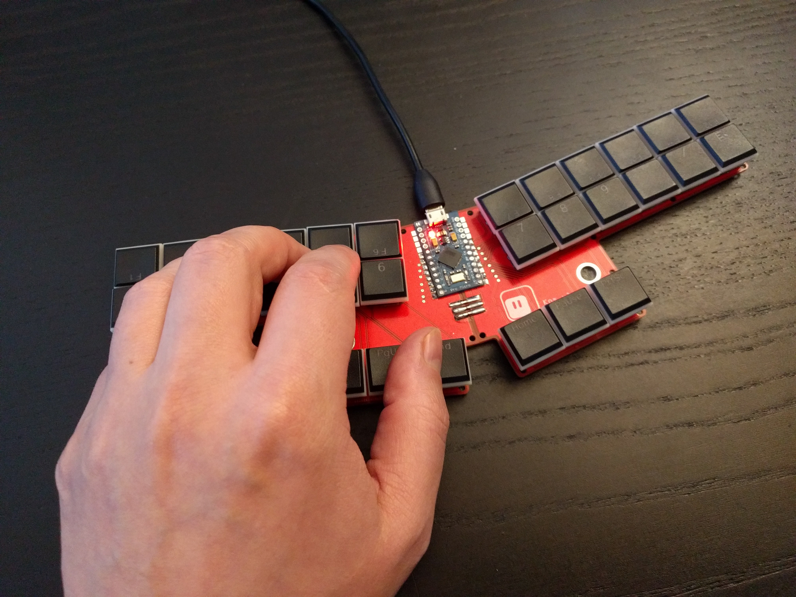
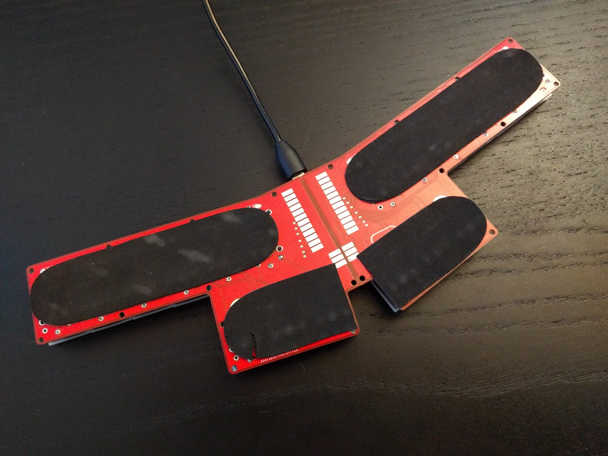

Kos v1.0¶
Published on 2021-12-06 in Steno Keyboard.
We have the first version of Kos working!

This time, instead of my favorite SAMD21 I userd a standard Pro Micro with Atmega32u4, and programmed it with QMK. This is to make this as easy to reproduce as possible, because the goal is to have an affordable steno machine with enough keys to do stenotyping in Polish.
The back has some nice foam stickers, so that it won’t scratch the desk:

The design files and QMK configuration are at https://github.com/deshipu/kos-steno